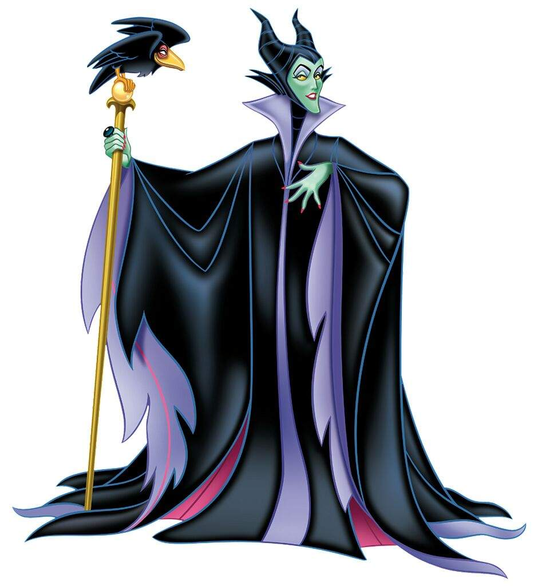

Personagem ficticio
Malevola

Habilidades
- Magia negra com seu cajado
- Manipulação
- Telestrnaporte
- Invisibilidade com a capa
- Seu corvo espiona seus adversarios
CITAÇÃO DO PERSONAGEM
Com grandes poderes malevola e seu corvo conseguiram tudo que os olhares invejosos alcançavam.
RELACIONAMENTOS
VAMPIRINHA SUA BEST
vampirinha
DRACULAURA SUA OUTRA BEST
draculaura
TURMA DOS JOVENS TITÃS SEUS MAIORES INIMIGOS
jovens titãs
Curiosidades
- Malevola tem depresão
- Sabe cozinhar muito bem
- Muito divertida com suas amigas
- Seu objetivo principal de vida não era ser a vilã
- Seu corvo a escolheu como mãe
- Muito carinhosa com os animais